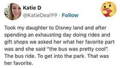

0

0
0

An anonymous reader quotes a report from the Guardian: Singing, painting or visiting a gallery or museum helps people age more slowly, according to the latest study to link taking an active interest in art and culture with improved health. The findings are the first to show that both participating in arts activities and attending events, such as viewing an exhibition, lead to people staying biologically younger. "These results demonstrate the health impact of the arts at a biological level. They provide evidence for arts and cultural engagement to be recognized as a health-promoting behavior in a similar way to exercise," said Prof Daisy Fancourt, the lead author of the research and the head of the social biobehavioral research group at University College London.
However, slower aging does not necessarily mean someone will live longer. The "epigenetic clocks" used in the study to assess biological ageing are predictive of future morbidity and mortality, and previous studies have suggested a link between arts engagement and longer lifespan, but much more research would be needed to establish potential causal effects on longevity. Those who take part in artistic pursuits the most often slow the pace of their biological aging the most. Under one of the study's methods of assessment, those who did so at least weekly slowed their aging process by 4%, while monthly engagement led to it slowing by 3%.
Similarly, another of the tests showed that those who undertook an arts activity at least once a week were on average a year younger biologically than those who rarely engaged in such pursuits. Those who exercised once a week were only six months younger by that measure. The benefit the arts confer on the pace at which people age is so dramatic that it is comparable to the difference between smokers and those who have given up smoking, the researchers say. The results, published in the journal Innovation in Aging, are based on blood test and survey response data from 3,556 adults taking part in the UK Household Longitudinal Study. It uses blood samples to estimate people's biological age and the pace at which they are ageing.
Read more of this story at Slashdot.
The Musk v. Altman trial entered its third week Monday, with Microsoft CEO Satya Nadella and former OpenAI co-founder and renowned AI researcher Ilya Sutskever taking the stand. Nadella testified that Elon Musk never raised concerns to him that Microsoft's investments in OpenAI violated any special commitments, and said he viewed the partnership as clearly commercial from the start. He also described OpenAI's 2023 board crisis as "amateur city."
Meanwhile, Sutskever testified that he had raised concerns about Sam Altman because he feared OpenAI could be "destroyed." He expressed concerns about Altman's behavior to the board, in part because he said he felt "a great deal of ownership" over the startup. "I simply cared for it, and I didn't want it to be destroyed," Sutskever said. CNBC reports: Nadella said he was "very proud" that Microsoft took the risk to invest in OpenAI when "no one else was willing" to bet on the fledgling lab. Musk, who testified late last month, said Microsoft's $10 billion investment was the key tipping point that made him believe OpenAI was violating its nonprofit mission. He testified that the scale of the investment bothered him, and it prompted him to open a legal investigation into OpenAI. "I was concerned they were really trying to steal the charity," Musk said from the stand.
Nadella said he did not believe Microsoft's investments in OpenAI were donations, and that there was a clear commercial element to their partnership from the outset. He said during the partnership's early years, Microsoft gave OpenAI sharp discounts on computing resources, and Microsoft believed it would reap marketing benefits from doing so. During a separate video deposition that was played on Monday morning, Michael Wetter, a corporate development executive at Microsoft, said the company has recognized approximately $9.5 billion in revenue to date through its partnership with OpenAI as of March 2025.
[...] Nadella said he was "pretty surprised" by the board's decision [to fire Altman in November 2023], and that his priority was to try and figure out how to maintain continuity for Microsoft customers. Immediately after Altman was removed, Nadella said he made an effort to learn more about what happened, adding that he suspected jealousy and poor communication was at play. During conversations with OpenAI board members after the firing, Nadella said he was simply trying to understand the language in the OpenAI's statement about Altman being "not consistently candid" while communicating with the board. That language, Nadella said, "just didn't sort of suffice, because this is the CEO of a company that we are invested in and we're deeply partnered with, and so I felt that they could have explained to me what are the incidents or what is the detail behind it." There must have been instances of jealousy or miscommunication that could have justified pushing out Altman, Nadella said. He wanted more depth from the board members after the remark about candor, but no such information was available, he said. "It was sort of amateur city, as far as I'm concerned," Nadella testified.
[...] Musk testified that he is not entirely against OpenAI having a for-profit unit, but he said it became "the tail wagging the dog." He repeatedly accused Altman and Brockman of enriching themselves from a charity while also reaping the positive associations that come from running a nonprofit. "Microsoft has their own motivations, and that would be different from the motivations of the charity," Musk said from the stand. "All due respect to Microsoft, do you really want Microsoft controlling digital superintelligence?"
During a videotaped deposition shown in court last week, former OpenAI director Tasha McCauley recalled a discussion with Nadella and her fellow board members after the 2023 decision to dismiss Altman as OpenAI's CEO. "To the best of my recollection, Satya wanted to restore things to as they had been," McCauley said. The board members didn't think that was the right move, she said. But as a court witness on Monday, Nadella said he never demanded that the board reinstate Altman as OpenAI CEO. Recap:
Sam Altman Had a Bad Day In Court (Day Eight)
Sam Altman's Management Style Comes Under the Microscope At OpenAI Trial (Day Seven)
Brockman Rebuts Musk's Take On Startup's History, Recounts Secret Work For Tesla (Day Six)
OpenAI President Discloses His Stake In the Company Is Worth $30 Billion (Day Five)
Musk Concludes Testimony At OpenAI Trial (Day Four)
Elon Musk Says OpenAI Betrayed Him, Clashes With Company's Attorney (Day Three)
Musk Testifies OpenAI Was Created As Nonprofit To Counter Google (Day Two)
Elon Musk and OpenAI CEO Sam Altman Head To Court (Day One)
Read more of this story at Slashdot.
A Georgia data center developed by QTS used nearly 30 million gallons of water through two unaccounted-for connections before residents complained about low water pressure and the county utility discovered the issue. "All told, the developer, Quality Technology Services, owed nearly $150,000 for using more than 29 million gallons of unaccounted-for water," reports Politico. "That is equivalent to 44 Olympic-size swimming pools and far exceeds the peak limit agreed to during the data center planning process." From the report: The details were revealed in a May 15, 2025 letter from the Fayette County water system to Quality Technology Services, which outlined the retroactive charge of $147,474. The letter did not specify how many months the unpaid bill covered, but when asked about it Wednesday, Vanessa Tigert, the Fayette County water system director, said it was likely about four months. A QTS spokesperson said the timeframe was 9-15 months. Once the data center was notified, it paid all retroactive charges, a QTS spokesperson said in an email, noting the unmetered water consumption occurred while the county converted its system to smart meters.
The Fayette County water system confirmed the data center's meters are now fully integrated and tracked. Tigert, the water system director, blamed the issue on a procedural mix-up. "Fayette County is a suburb, it's mostly residential, and we don't have much commercial meters in our system anyway," she said. "And so we didn't realize our connection point wasn't working." The incident became public last week when a county resident obtained the 2025 letter to QTS through a public records request and posted it on Facebook, prompting outrage from residents concerned about the data center's water consumption. [...]
Tigert, who sent the 2025 letter to QTS, said the utility didn't know about the water hookups because the connection process "got mixed up" as the county transitioned to a cloud-based system while also trying to accommodate an industrial customer. Tigert also said her staff is small and at capacity. "Just like any water system, we don't have enough staff. We can't keep staff," she said. "I've got one person that's doing inspections and plan review, and so he's spread pretty thin." She said it's possible her staff did know about hookups but that she hadn't been able to locate the inspection report. "I may have hit 'send' too soon," she said about the 2025 letter to QTS. While the utility charged the data center a higher construction rate for the unapproved water consumption, Tigert confirmed the utility did not penalize or fine the data center.
For what it's worth, the Blackstone-owned company says its data centers use a closed-loop cooling system that does not consume water for cooling. The reason for last year's high water use, according to QTS, was the temporary construction work such as concrete, dust control, and site preparation.
Once the campus is fully operational, it should only use a small amount of water for things like bathrooms and kitchens. But that point could still be years away, as construction and expansion in Fayetteville may continue for another three to five years.
Read more of this story at Slashdot.
Digg is relaunching again, this time as an AI-focused news aggregator rather than the Reddit-style community site it recently abandoned. TechCrunch reports: On Friday evening, the founder previewed a link to the newly redesigned Digg, which now looks nothing like a Reddit clone and more like the news aggregator it once was. This time around, the site is focused on ranking news -- specifically, AI news to start. In an email to beta testers, the company said the site's goal is to "track the most influential voices in a space" and to surface the news that's actually worth "paying attention to." AI is the area it's testing this idea with, but if successful, Digg will expand to include other topics. The email warned that the site was still raw and "buggy," and was designed more to give users a first look than to serve as its public debut.
On the current homepage, Digg showcases four main stories at the top: the most viewed story, a story seeing rising discussion, the fastest-climbing story, and one "In case you missed it" headline. Below that is a ranked list of top stories for the day, complete with engagement metrics like views, comments, likes, and saves. But the twist is that these metrics aren't the ones generated on Digg itself. Instead, Digg is ingesting content from X in real-time to determine what's being discussed, while also performing sentiment analysis, clustering, and signal detection to determine what matters most. [...] The site also ranks the top 1,000 people involved in AI, as well as the top companies and the top politicians focused on AI issues.
Read more of this story at Slashdot.
Nvidia's real AI moat isn't "a piece of hardware," writes Wired's Sheon Han. It's CUDA: a mature, deeply optimized software ecosystem that keeps machine-learning workloads tied to Nvidia GPUs. An anonymous reader quotes a report from Wired: What sounds like a chemical compound banned by the FDA may be the one true moat in AI. CUDA technically stands for Compute Unified Device Architecture, but much like laser or scuba, no one bothers to expand the acronym; we just say "KOO-duh." So what is this all-important treasure good for? If forced to give a one-word answer: parallelization. Here's a simple example. Let's say we task a machine with filling out a 9x9 multiplication table. Using a computer with a single core, all 81 operations are executed dutifully one by one. But a GPU with nine cores can assign tasks so that each core takes a different column -- one from 1x1 to 1x9, another from 2x1 to 2x9, and so on -- for a ninefold speed gain. Modern GPUs can be even cleverer. For example, if programmed to recognize commutativity -- 7x9 = 9x7 -- they can avoid duplicate work, reducing 81 operations to 45, nearly halving the workload. When a single training run costs a hundred million dollars, every optimization counts.
Nvidia's GPUs were originally built to render graphics for video games. In the early 2000s, a Stanford PhD student named Ian Buck, who first got into GPUs as a gamer, realized their architecture could be repurposed for general high-performance computing. He created a programming language called Brook, was hired by Nvidia, and, with John Nickolls, led the development of CUDA. If AI ushers in the age of a permanent white-collar underclass and autonomous weapons, just know that it would all be because someone somewhere playing Doom thought a demon's scrotum should jiggle at 60 frames per second. CUDA is not a programming language in itself but a "platform." I use that weasel word because, not unlike how The New York Times is a newspaper that's also a gaming company, CUDA has, over the years, become a nested bundle of software libraries for AI. Each function shaves nanoseconds off single mathematical operations -- added up, they make GPUs, in industry parlance, go brrr.
A modern graphics card is not just a circuit board crammed with chips and memory and fans. It's an elaborate confection of cache hierarchies and specialized units called "tensor cores" and "streaming multiprocessors." In that sense, what chip companies sell is like a professional kitchen, and more cores are akin to more grilling stations. But even a kitchen with 30 grilling stations won't run any faster without a capable head chef deftly assigning tasks -- as CUDA does for GPU cores. To extend the metaphor, hand-tuned CUDA libraries optimized for one matrix operation are the equivalent of kitchen tools designed for a single job and nothing more -- a cherry pitter, a shrimp deveiner -- which are indulgences for home cooks but not if you have 10,000 shrimp guts to yank out. Which brings us back to DeepSeek. Its engineers went below this already deep layer of abstraction to work directly in PTX, a kind of assembly language for Nvidia GPUs. Let's say the task is peeling garlic. An unoptimized GPU would go: "Peel the skin with your fingernails." CUDA can instruct: "Smash the clove with the flat of a knife." PTX lets you dictate every sub-instruction: "Lift the blade 2.35 inches above the cutting board, make it parallel to the clove's equator, and strike downward with your palm at a force of 36.2 newtons." "You can begin to see why CUDA is so valuable to Nvidia -- and so hard for anyone else to touch," writes Han. "Tuning GPU performance is a gnarly problem. You can't just conscript some tender-footed undergrad on Market Street, hand them a Claude Max plan, and expect them to hack GPU kernels. Writing at this level is a grindsome enterprise -- unless you're a cracker-jack programmer at DeepSeek..."
Han goes on to argue that rivals like AMD and Intel offer competitive specs on paper, but their software stacks have struggled with bugs, compatibility issues, and weak adoption. As a result, Nvidia has built an Apple-like moat around AI computing, leaving the industry dependent on its expensive hardware.
Read more of this story at Slashdot.
cURL creator Daniel Stenberg says Anthropic's hyped Mythos bug-hunting model found only one confirmed low-severity vulnerability in cURL, plus a few non-security bugs, after he expected a much longer list. He argues Mythos may be useful, but not meaningfully beyond other modern AI code-analysis tools. "My personal conclusion can however not end up with anything else than that the big hype around this model so far was primarily marketing," Stenberg said a blog post. "I see no evidence that this setup finds issues to any particular higher or more advanced degree than the other tools have done before Mythos." He went on to call Mythos "an amazingly successful marketing stunt for sure." The Register reports: Stenberg explained in a Monday blog post that he was promised access to Anthropic's Mythos model - sort of - through the AI biz's Project Glasswing program. Part of Glasswing involves giving high-profile open source projects access via the Linux Foundation, but while Stenberg signed up to try Mythos, he said he never actually received direct access to the model. Instead, someone else with access ran Mythos against curl's codebase and later sent him a report. "It's not that I would have a lot of time to explore lots of different prompts and doing deep dive adventures anyway," Stenberg explained. "Getting the tool to generate a first proper scan and analysis would be great, whoever did it."
That scan, which analyzed curl's git repository at a recent master-branch commit, was sent back to him earlier this month, and it found just five things that it claimed were "confirmed security vulnerabilities" in cURL. Saying he had expected an extensive list of vulnerabilities, Stenberg wrote that the report "felt like nothing," and that feeling was further validated by a review of Mythos' findings. "Once my curl security team fellows and I had poked on this short list for a number of hours and dug into the details, we had trimmed the list down and were left with one confirmed vulnerability," Stenberg said, bringing us back to the aforementioned number.
As for the other four, three turned out to be false positives that pointed out cURL shortcomings already noted in API documentation, while the team deemed the fourth to be just a simple bug. "The single confirmed vulnerability is going to end up a severity low CVE planned to get published in sync with our pending next curl release 8.21.0 in late June," the cURL meister noted. "The flaw is not going to make anyone grasp for breath."
Read more of this story at Slashdot.
Apple now requires Education Store shoppers in the U.S. and several other countries to verify their student, educator, parent, or homeschool-teacher status through UNiDAYS, ending the previous honor-system approach. 9to5Mac reports: Starting today, Apple requires shoppers in the United States to complete verification when making a purchase via the Education Store. This change also applies to Australia, Hong Kong, Turkey, Canada, and Chile. In many other markets around the world, such as the UK, Apple already required verification. As a refresher, people eligible for Apple's Education Store include current and newly accepted college students and their parents, as well as faculty, staff, and homeschool teachers across all grade levels.
Apple is teaming up with UNiDAYS to handle the verification process. Students and educators will be asked to create a UNiDAYS ID and then verify their academic status by logging in to their school's academic portal. Alternatively, users can upload a photo of their student or faculty IDs. Homeschool teachers, meanwhile, will need to provide an identity document such as a driver's license, state ID card, or passport. They'll also need to provide one homeschool document, such as a Letter of Intent (LOI) or Letter of Acknowledgment. Most customers will be verified instantly, and those requiring manual verification should hear back within 24 hours. The same verification process applies both in-store and online for Apple Education Store shoppers. Meanwhile, Apple has added Apple Watch to the Education Store for the first time, offering discounts on the Series 11, SE 3, and Ultra 3.
Read more of this story at Slashdot.
An anonymous reader quotes a report from TechCrunch: Fictional portrayals of artificial intelligence can have a real effect on AI models, according to Anthropic. Last year, the company said that during pre-release tests involving a fictional company, Claude Opus 4 would often try to blackmail engineers to avoid being replaced by another system. Anthropic later published research suggesting that models from other companies had similar issues with "agentic misalignment."
Apparently Anthropic has done more work around that behavior, claiming in a post on X, "We believe the original source of the behavior was internet text that portrays AI as evil and interested in self-preservation." The company went into more detail in a blog post stating that since Claude Haiku 4.5, Anthropic's models "never engage in blackmail [during testing], where previous models would sometimes do so up to 96% of the time."
What accounts for the difference? The company said it found that training on "documents about Claude's constitution and fictional stories about AIs behaving admirably improve alignment." Related, Anthropic said that it found training to be more effective when it includes "the principles underlying aligned behavior" and not just "demonstrations of aligned behavior alone." "Doing both together appears to be the most effective strategy," the company said.
Read more of this story at Slashdot.
Ford's sales of electrified vehicles — including hybrids and all-electric models — dropped 31% from April 2025, reports Electrek. "Hybrid sales fell 32% to 15,758 vehicles, while EV sales continued to crash with just 3,655 all-electric models sold last month, 25% fewer than in the year prior."
After discontinuing the F-150 Lightning in December, sales of the electric pickup have been in free fall. Ford sold just 884 Lightnings last month, 49% less than it did last April. The Mustang Mach-E isn't doing much better. Sales fell another 9% year over year in April, to just 2,670 models last month. Through the first four months of 2026, Ford's EV sales have fallen 61% from last year, with F-150 Lightning and Mustang Mach-E sales down 67% and 50%, respectively. Ford has sold just over 10,500 electric vehicles in total so far this year... For comparison, Toyota sold just over 10,000 bZ models in the first quarter alone. That's more than Ford's total EV sales in Q1.
April was Ford's fourth straight month of lower sales figures from 2025, the article points out. So Ford is bringing back "employee pricing" discounts on most new 2025 and 2026 Ford and Lincoln vehicles., while also offering "purchase incentives" of up to $9,000 for 2025 Lightning models and up to $6,000 for 2025 Mustang Mach-Es. "It's also offering EV buyers a free Level 2 home charger, 24/7 live support, and proactive roadside assistance through its Power Promise program."
Read more of this story at Slashdot.
Researchers at Columbia demonstrated the first real-time brain-controlled hearing system that can identify which speaker a listener is focusing on in a noisy environment and automatically amplify that voice while suppressing others. "This breakthrough addresses the 'cocktail party effect,' a major limitation of conventional hearing aids, which often struggle to distinguish between overlapping conversations in noisy settings," reports Neuroscience News. From the report: In the new study, Columbia researchers teamed up with surgeons and their epilepsy patients who were undergoing brain surgery to better pinpoint the sources of their seizures. The hospital patients, who volunteered to be part of this study, already had electrodes implanted in their brains. [senior author Nima Mesgarani's] system used the electrodes to measure the brain activity of the patients as they focused on one of two overlapping conversations played simultaneously. The system then automatically detected which conversation a patient was paying attention to and adjusted the volume in real time, turning up that conversation while quieting the other. For one volunteer, the experience of controlling the system with her brain was literally unbelievable. She accused the researchers of secretly adjusting the volumes. Others told stories about friends and family with hearing impairments who could benefit from such a technology. One person said: "It seems like science fiction."
[...] The scientists developed real-time machine-learning algorithms that could examine the brainwaves and identify which conversation the patients were paying attention to. Once deployed, their system could rapidly deduce which conversation each listener was paying attention to and make it easier for them to hear it. This happened both when the researchers guided the subjects toward a particular conversation, and when the subjects chose freely, as would be necessary in a real-world conversation. "For this to work in real time, the system has to be very fast, accurate and stable for the experience to feel pleasant for the listener," Dr. Mesgarani said. The scientists found their new system correctly identified which conversation the volunteers paid attention to. This dramatically improved the intelligibility of the speech the volunteers focused on, reduced listening effort, and was consistently preferred by the volunteers when compared to conversations the system did not provide assistance with. One volunteer recalled her uncle, who had hearing problems. "Can you imagine if this technology existed in a world [where] ... he could access it? He might actually live a much more peaceful... life." The research has been published in Nature Neuroscience.
Read more of this story at Slashdot.
GM is laying off about 500 to 600 salaried IT workers, mainly in Austin, Texas, and Warren, Michigan, as it restructures its technology organization and trims costs. "GM is transforming its Information Technology organization to better position the company for the future. As part of that work, we have made the difficult decision to eliminate certain roles globally. We are grateful for the contributions of the employees affected and are committed to supporting them through this transition," the automaker said in an emailed statement. CNBC reports: GM reported employing about 68,000 salaried workers globally as of the end of last year, including 47,000 white-collar employees in the U.S. Despite Monday's cuts, GM still is still hiring IT workers. The company has 82 open IT positions that include positions working in artificial intelligence, motorsports and autonomous vehicles, according to the automaker's careers website.
Read more of this story at Slashdot.
An anonymous reader quotes a report from 404 Media: Speaking to graduates of University of Central Florida's College of Arts and Humanities and Nicholson School of Communication and Media on May 8, commencement speaker Gloria Caulfield, vice president of strategic alliances at Tavistock Group, told graduating humanities students that AI is the "next industrial revolution," and was met with thousands of booing graduates. "And let's face it, change can be daunting. The rise of artificial intelligence is the next industrial revolution," Caulfield said. At that point, murmurs rippled through the crowd. Caulfield paused, and the crowd erupted into boos. "Oh, what happened?" Caulfield said, turning around with her hands out. "Okay, I struck a chord. May I finish?" Someone in the crowd yelled, "AI SUCKS!"
Her speech begins around the hour and 15 minute mark in the UCF livestream. [...] Before the industrial revolution comment, Caulfield praised Jeff Bezos for his passion and use of Amazon as a "stepping stone" to his real dream: spaceflight. Rattled after the crowd's reaction, she continued her speech: "Only a few years ago, AI was not a factor in our lives." The crowd cheered. "Okay. We've got a bipolar topic here I see," Caulfield said. "And now AI capabilities are in the palm of our hands." The crowd booed again. "I love it, passion, let's go," she said. "AI is beginning to challenge all major sectors to find their highest and best use," she continued. "Okay, I don't want any giggles when I say this. We have been through this before, these industrial revolutions. In my graduation era, we were faced with the launch of the internet."
She goes on to talk about how cellphones used to be the size of briefcases. "At that time we had no idea how any of these technologies would impact the world and our lives. [...] These were some of the same trepidations and concerns we are now facing. But ultimately it was a game changer for global economic development and the proliferation of new businesses that never existed like Apple and Google and Meta and so many others, and not to mention countless job opportunities. So being an optimist here, AI alongside human intelligence has the potential to help us solve some of humanity's greatest problems. Many of you in this graduating class will play a role in making this happen."
Read more of this story at Slashdot.
Google says it has seen the first evidence of cybercriminals using AI to create a zero-day vulnerability. "Google reported its findings to the unnamed firm affected by the vulnerability before releasing its report," reports Politico. "The company then issued a patch to fix the issue." From the report: Google Threat Intelligence Group researchers detailed the development in a report released Monday. Zero-day exploits are considered the most serious type of security flaw because they are not detected by security companies and have no known fixes. The report noted that this was the first time Google had seen evidence of AI being used to develop these vulnerabilities -- marking a major change in the cybersecurity landscape, as it suggests newer AI models could be used to create major exploits, not just find them.
Google concluded that Anthropic's Claude Mythos model -- which has already found thousands of vulnerabilities across every major operating system and web browser -- was most likely not used to create the zero-day exploit. [...] The Google Threat Intelligence Group report also details efforts by Russia-linked hacking groups to use AI models to target Ukrainian networks with malware, while North Korean government hacking group APT45 used AI technologies to refine and scale up its cyber methods.
John Hultquist, chief analyst at Google Threat Intelligence Group, said the findings made clear that the race to use AI to find network vulnerabilities has "already begun."
"For every zero-day we can trace back to AI, there are probably many more out there," Hultquist said. "Threat actors are using AI to boost the speed, scale, and sophistication of their attacks."
Read more of this story at Slashdot.
Apple says end-to-end encryption for RCS messages between iPhone and Android is now available in iOS 26.5, though the feature is still considered beta and depends on carrier support on both sides. MacRumors reports: Apple says that it worked with Google to lead a cross-industry effort to add E2EE to RCS. iOS users will need iOS 26.5, while Android users will need the latest version of Google Messages. End-to-end encryption is on by default, and there is a toggle for it in the Messages section of the Settings app. Encrypted messages are denoted with a small lock symbol. On iPhones not running iOS 26.5, RCS messages between iPhone and Android users do not have E2EE, but the new update will put Android to iPhone conversations on par with iPhone to iPhone conversations that are encrypted through iMessage.
Along with Google, Apple worked with the GSM Association to implement E2EE for RCS messages. E2EE is part of the RCS Universal Profile 3.0, published with Apple's help and built on the Messaging Layer Security protocol. RCS Universal Profile 3.0 also includes editing and deleting messages, cross-platform Tapback support, and replying to specific messages inline during cross-platform conversations.
Read more of this story at Slashdot.
Linux 7.1 started phasing out support for Intel's 37-year-old i486 processor. Linux 7.2 removed drivers for the old AMD Elan 32-bit systems on a chip.
And now some i586 and i686 class processors are being removed, reports Phoronix:
Supporting those vintage GPUs without the Time Stamp Counter "TSC" instruction are becoming a burden... TSC-capable Intel Pentium processors and the likes will still be supported with this just being for TSC-less i586/i686 CPUs. Among the CPUs impacted by this latest change is the AMD K5 as well as various Cyrix processor models. The K5 was AMD's first entirely in-house designed processor that was first introduced in 1996 to counter the Intel Pentium CPU.
TSC "support can now be assumed as a boot requirement for modern Linux," the article points out, which will allow the removal of various non-TSC code paths from the Linux kernel's x86 code.
Tom's Hardware remembers the K5 "wasn't a very popular processor as it arrived late, then offered lackluster performance in the competitive environment it joined."
Launch SKUs in 1996 were limited to clocks from 75 MHz to 133 MHz, and, due to being late, Intel's Pentium line was already faster. AMD still managed to get an edge on the Cyrix 6x86, though.
Read more of this story at Slashdot.
Marina Temkin / TechCrunch : Exaforce, which uses AI agents to detect and thwart cyberattacks, raised a $125M Series B at a $725M valuation, bringing its total funding to $200M — As bad actors weaponize AI to exploit software vulnerabilities at unprecedented speed, companies are increasingly recognizing the need to bolster their cybersecurity defenses.
Bloomberg : Sources: Wispr AI, the developer of the voice dictation tool Wispr Flow, is in talks to raise ~$260M in a round that could more than double its valuation to $2B — Wispr AI Inc., the developer behind the popular voice dictation tool Wispr Flow, is in talks to raise a new round of funding …
Mauro Orru / Wall Street Journal : SAP launches its new Autonomous Enterprise software suite, integrating data, cloud, AI, and automation features to streamline business processes — German group seeks to stay on top of a technology that cast doubt on the sustainability of the software industry
Sadie Gurman / Wall Street Journal : PayPal agrees to forgo ~$30M in transaction fees to end a DOJ probe into allegations that the company adopted unlawful preferences for minority-owned businesses — Case is part of Trump administration campaign against corporate DEI initiatives — PayPal agreed to forgo approximately $30 million …
Anna Irrera / Bloomberg : London-based blockchain analytics company Elliptic raised $120M led by One Peak Partners at a $670M valuation; the platform screens 1B+ transactions per week — Blockchain analytics firm Elliptic Enterprises Ltd. has raised $120 million in a new funding round backed by Deutsche Bank AG …
Cory Weinberg / The Information : OpenAI stands to hold ~$2.6B in combined CoreWeave and Cerebras stock that it acquired by committing to buy cloud services and chips, and to lend Cerebras money — Chipmaker Cerebras brought in one of the greatest pitchmen in tech, Sam Altman, to appear in a video to promote its $5.5 billion initial public offering.
Etiido Uko / Tom's Hardware : Microsoft says it is investigating a Mistral AI PyPI package v2.4.6 compromise; researchers say it is likely part of the Mini Shai-Hulud supply chain attack — The malware reportedly refused to run on Russian-language systems but could execute a destructive payload under certain geographic conditions.
Yazhou Sun / Bloomberg : SAP invests in German workflow automation platform n8n at a $5.2B valuation, up from $2.5B after an October 2025 equity raise, and agrees to embed n8n's tools — SAP SE is investing in workflow automation platform n8n, doubling the startup's valuation to $5.2 billion, as the German software giant builds …
Jess Weatherbed / The Verge : Spotify celebrates its 20th anniversary with a Wrapped-like experience that features “never-before-shared data” going back to when users first joined Spotify — The company will include ‘never-before-shared data’ as part of its 20th anniversary celebrations.
Financial Times : Delivery Hero says founder Niklas Östberg plans to step down as CEO by March 2027, as the German food delivery group faces mounting activist investor pressure — Founder Niklas Östberg will leave German food delivery group by next March — Delivery Hero founder Niklas Östberg …
Jagmeet Singh / TechCrunch : AI voice startup Vapi raised a $50M Series B led by Peak XV, a source says at a $500M post-money valuation, after Amazon chose Vapi to handle 100% of Ring calls — Amazon Ring, facing a surge in customer-support calls during last year's holiday season, evaluated more than 40 AI voice vendors …
Olivia Poh / Bloomberg : Sea reports Q1 revenue up 47% YoY to $7.1B and net income up 6% YoY to $428M, both above est., after warding off rivals in Southeast Asia's e-commerce market — Sea Ltd. reported quarterly earnings that topped analysts' estimates after warding off rivals in Southeast Asia's competitive e …
Sarah Perez / TechCrunch : Amazon launches Amazon Now, its 30-minute delivery service, in dozens of US cities including Atlanta, Dallas-Fort Worth, Philadelphia, and Seattle, after pilots — Amazon deliveries keep getting faster. On Tuesday, the online retailer announced the launch of its 30-minute delivery option …
John Koblin / New York Times : YouTube is shifting its creator monetization strategy by acting as a matchmaker between creators and sponsors, as Netflix and TikTok increasingly woo creators — The company is trying to help streaming influencers, who are increasingly being wooed by competitors like Netflix and TikTok.
Wall Street Journal : JD.com reports Q1 revenue up 4.9% YoY to $46.5B, above ~$45.8B est., and adjusted net profit down 42% YoY to $1B, amid a fierce food delivery battle in China — JD.com JD 1.33%increase; green up pointing triangle returned to the black in the first quarter, in a sign the Chinese e-commerce giant …